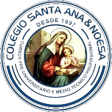

Início
Explorar

JORNAL MURAL
Instituto Técnico Médio
Santa Ana & Noesa
Informática
Este site foi desenvolvido pelo DEV WEB Júnior Graciano Húcui, estudante do curso de informática/ manhã/ sala: 6... Este projecto é para a coordenação do mesmo Instituto. Obrigado!